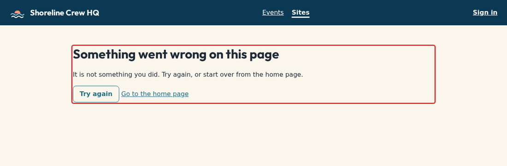
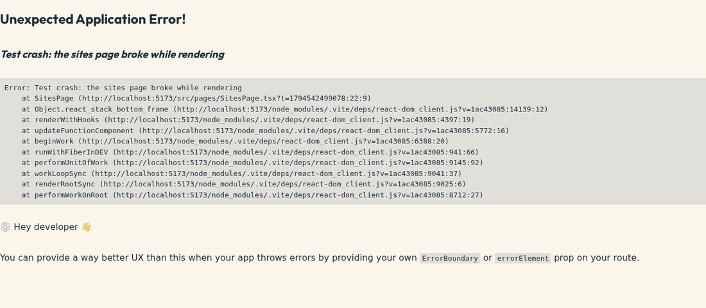

🧭 Lesson 6.1: React Router 8
Since Lesson 3.2 the HQ has picked its page with a few lines that read the address once, when the app starts. Every link loads the whole app again: the JavaScript, the fonts, the data. Today the HQ gets a real router. Links swap the page in place, the Back button works, a cleanup's address becomes something the code can read, unknown addresses get a friendly page, and a crashing page no longer takes the header with it. You will also take care of what a router does not do for free: telling keyboard and screen reader users that the page changed.
🎯 Learning Objectives
By the end of this lesson, you will be able to:
- Explain what client-side routing changes compared with following plain links, and why the server must still answer every address
- Describe an app's pages as typed route objects with
createBrowserRouter, including a layout route, an index route and a catch-all*route - Navigate with
LinkandNavLink, style the current link througharia-current, and passLinkto a polymorphic component - Read URL parameters with
useParams, narrow theirstring | undefinedtype, and reset a component's state with akeywhen only the parameter changes - Choose between a route's
errorElementand your own error boundary, and keep the layout on screen when a page crashes - Move the focus and the scroll position after a page change so every visitor knows where they are
📦 Code for this lesson
Starting code: lesson-21-start.zip · Finished code: lesson-21-end.zip. Each folder has a README with the commands to run it. Copy .env.example to .env.local in shoreline-hq before npm run dev.
In This Lesson
🗺️ Why the HQ Needs a Router
Open src/App.tsx from the last lesson. A comment says it plainly: the page is chosen from window.location.pathname, read once, "until React Router arrives". That worked because every link in the HQ is a plain <a href="/events">, and a plain link makes the browser throw the app away and load it again from the top. Each click repeats the whole start-up: download and run the JavaScript, read the session from sessionStorage, fetch the page's data. The Back button works, but only because each click is a full page load.
A router keeps the app running and changes the page inside it. When someone follows a router link, it writes the new address into the address bar with the browser's History API (no request for a new HTML page), works out which page the address belongs to, and asks React to render that page. Everything that is the same on both pages (the header, the footer, the signed-in user) stays as it is. The Back and Forward buttons, bookmarks and shared links keep working, because the address is still the real address of the page.
💡 Mental model: the meeting-point board
On cleanup mornings the crew puts up a board at the parking lot: "Gloves and bags: blue tent. Check-in: picnic table. First-timers: talk to Maya." Volunteers read the board and walk to the right spot; nobody rebuilds the beach for each one. The router is that board. The address is what a visitor is looking for, the route list is the board, and the page is the spot it points to. The beach (the app, with its header, its signed-in user and its loaded code) stays where it is.
| Plain links (the HQ until today) | Router links (from today) | |
|---|---|---|
| Following a link | Loads the app again: HTML, JavaScript, fonts, then the data | Renders the new page; only its data is fetched |
| State outside the page | Lost, unless it was saved (the session survives in sessionStorage) | Kept: the header, the signed-in user, anything above the page |
| Back and Forward | Work (each one is another page load) | Work, without a page load |
| Choosing the page | Your own ifs and a regular expression | A route list the router matches, with parameters |
| The server | Must answer every address with the app | Still must answer every address with the app (more on that at the end) |
Why this matters beyond speed: in a team codebase the route list is the first file people read to find their way around, and route-level ideas such as layouts, error pages and (in Lesson 6.3) data loading all hang off it. React itself has no idea what an address is. The router is the piece that connects the two, and React Router is the one most React apps you will meet use.
📦 Routes as Typed Data
React Router 8 is one package, react-router. Install it in shoreline-hq (Step 1 does this with you); its TypeScript types are inside the package, so there is no @types package to add. This course was checked with version 8.5.1.
React Router can be used in three ways, called modes. The HQ uses data mode: you describe the routes as an array of plain objects, hand it to createBrowserRouter, and render the result with <RouterProvider>. Data mode is the one that later lets a route load its data before the page renders and handle form submissions (Lesson 6.3), so starting there means nothing gets rewritten.
| Mode | How you describe routes | Where you will meet it |
|---|---|---|
| Declarative | JSX: <BrowserRouter>, <Routes>, <Route> | Many tutorials and older apps; no loaders or actions |
| Data (the HQ) | Route objects in createBrowserRouter([...]) | Single-page apps that load data per route |
| Framework | A routes file plus a Vite plugin, with server rendering | Full-stack apps; it is what the Remix framework became |
Here is the start of the HQ's route list. Each object is one route: a path to match and an element to render.
// Every address the HQ knows, and the page it shows there
const router = createBrowserRouter([
{
path: '/',
element: <AppLayout />,
children: [
{
// A route without a path: it adds the error page and keeps the layout around it
errorElement: <PageCrashed />,
children: [
{ index: true, element: <HomePage /> },
{ path: 'events', element: <EventsPage /> },
{ path: 'events/new', element: <NewEventPage /> },
{ path: 'events/:eventId', element: <EventPage /> },
{ path: 'sites', element: <SitesPage /> },
{ path: 'sign-in', element: <SignInPage /> },
{ path: '*', element: <NotFoundPage /> },
],
},
],
},
])Paths of child routes are relative to their parent: 'events/:eventId' inside '/' matches /events/e08. A segment that starts with a colon is a parameter: it matches any one segment and hands its value to the page (that is how EventPage learns which cleanup to show). The order does not decide the match. React Router ranks the routes, so events/new wins over events/:eventId for /events/new wherever they appear in the list, and * only matches what nothing else does.
TypeScript checks the shape of every route
The array is typed as RouteObject[], and RouteObject is a union you already know how to read from Lesson 2.2: an IndexRouteObject (index: true, and children?: undefined) or a NonIndexRouteObject (index?: false, with optional children). An index route is the page at its parent's address, so it cannot have pages of its own. Try giving one children:
import { createBrowserRouter } from 'react-router'
import { EventsPage } from './pages/EventsPage.tsx'
import { NewEventPage } from './pages/NewEventPage.tsx'
// An index route is the page AT its parent's address: it cannot have pages of its own
export const router = createBrowserRouter([
{
index: true,
element: <EventsPage />,
children: [{ path: 'new', element: <NewEventPage /> }],
},
])Expected output
src/Scratch.tsx:7:3 - error TS2322: Type '{ index: true; element: JSX.Element; children: [{ path: string; element: JSX.Element; }]; }' is not assignable to type 'RouteObject'.
Types of property 'children' are incompatible.
Type '[{ path: string; element: Element; }]' is not assignable to type 'undefined'.
7 {
~
8 index: true,
~~~~~~~~~~~~~~~~
...
10 children: [{ path: 'new', element: <NewEventPage /> }],
~~~~~~~~~~~~~~~~~~~~~~~~~~~~~~~~~~~~~~~~~~~~~~~~~~~~~~~~~~~
11 },
~~~
Found 1 error in src/Scratch.tsx:7Read it from the bottom up: children must be undefined on this object, because index: true picked the index member of the union. That is a discriminated union guarding you from a route that could never render. Error messages like this one are TypeScript doing its job early; the fix is to read the last line, not to fight the first.
🧩 Version note: react-router-dom and older tutorials
Until version 6, browser apps installed react-router-dom. Since version 7 everything lives in react-router, and there is no version 8 of react-router-dom: on npm its latest release is a 7.x that brings its own copy of react-router 7. Tutorials written for older versions also wrap the app in <BrowserRouter> and use <Switch> (version 5) or <Routes>. If you follow one, translate its imports to react-router; the Common Mistakes section shows what happens when the two packages meet.
🏗️ Layouts, Index Routes and Not Found
The HQ's frame (skip link, header, <main>, footer) is the same on every page. In the route list it becomes a layout route: the route for / renders <AppLayout />, and its children are the pages. AppLayout no longer takes children; it renders <Outlet /> where the page goes, and the router fills the outlet with whichever child route matches.
import { Outlet, ScrollRestoration, useLocation } from 'react-router'
// ...
<main id="main" ref={mainRef} tabIndex={-1} className={styles.page}>
<Outlet />
</main>Between the layout route and the pages sits a route with no path at all. A pathless route does not add anything to the address; it groups its children so they can share something. Here they share an errorElement, which the section on crashes explains. Inside it:
| Route | Matches | Renders |
|---|---|---|
{ index: true } | / exactly (the parent's own address) | HomePage |
'events', 'events/new', 'sites', 'sign-in' | That address (a trailing slash too: /events/ showed the events page) | The page |
'events/:eventId' | /events/e08, /events/anything | EventPage, which reads eventId |
'*' | Everything else, such as /volunteers or /events/e01/photos | NotFoundPage |
Because the * route is a child of the layout, the not-found page keeps the header, the footer and a way back:

* route catches every address the HQ does not know. It sits inside the layout route, so the header and footer stay and people have a way on.The Volunteers and Impact links have left the header for now. Until today they quietly showed the home page; with a router they would land on "Page not found", which is honest but not a good link. They come back with their pages.
🔗 Links That Do Not Reload
<Link to="/events"> renders a real <a href="/events">, so it still works with a middle-click, "Open in new tab", "Copy link" and a screen reader's links list. What changes is a plain left click: Link cancels the browser's page load and tells the router to navigate instead. Measured in the HQ (on the build and on the dev server): from the home page, through Events, a cleanup, Back, Forward and the logo back home, the browser loaded exactly one HTML page, the first one.
Link takes to, not href. TypeScript knows:
import { Link } from 'react-router'
export function BackToList() {
return <Link href="/events">← All cleanups</Link>
}Expected output
src/Scratch.tsx:4:16 - error TS2322: Type '{ href: string; children: string; }' is not assignable to type 'IntrinsicAttributes & LinkProps & RefAttributes<HTMLAnchorElement>'.
Property 'href' does not exist on type 'IntrinsicAttributes & LinkProps & RefAttributes<HTMLAnchorElement>'. Did you mean 'ref'?
4 return <Link href="/events">← All cleanups</Link>
~~~~
Found 1 error in src/Scratch.tsx:4NavLink: the link that knows it is current
A NavLink is a Link that compares its to with the current address. When they match, it adds aria-current="page", which screen readers announce ("current page"), and a class named active. CSS Modules rename your classes, so a global active class is awkward to style; style the attribute instead, as Lesson 3.6's Exercise 1 did by hand. Then what people see and what screen readers hear can never disagree:
.nav a[aria-current='page'] {
font-weight: 700;
text-decoration-thickness: 3px;
text-underline-offset: 0.3em;
}By default a NavLink also counts the addresses below its own as a match. Measured: Events is current on /events, /events/new and /events/e08, which is what you want for a section of the app. Add the end prop when only the exact address should count (Exercise 1 measures it).

NavLink gives Events aria-current="page" on every address that starts with /events, including a single cleanup. The header's CSS styles that attribute, so what people see matches what screen readers announce.Link through the polymorphic Button
Lesson 5.4 promised this one. "Plan a cleanup" has been <Button as="a" href="/events/new" variant="primary">. Because as accepts any component, and the props follow it, the change is at the call site only:
import { useEffect, useRef, useState } from 'react'
+import { Link } from 'react-router'
import { getEvents, getSites } from '../api/client.ts'
// ...
- <Button as="a" href="/events/new" variant="primary">
+ <Button as={Link} to="/events/new" variant="primary">
Plan a cleanup
</Button>Button is unchanged. With as={Link}, its props come from ComponentPropsWithRef<typeof Link>, so to is required and href is an error, exactly as the stand-in showed last lesson. In the browser it is still an <a href="/events/new"> with no type attribute, in the primary teal.
🔎 Reading the Address: useParams
Until today App pulled the cleanup's id out of the address with a regular expression and passed it to EventPage as a prop. With the route 'events/:eventId', the page asks the router instead:
// The route is events/:eventId, so the router fills in eventId from the address
export function EventPage() {
const { eventId } = useParams()
const { session } = useAuth()
const viewer = session?.user.id ?? 'guest'
if (eventId === undefined) {
throw new Error('EventPage needs a route with an :eventId parameter')
}Hover eventId in VS Code and the tooltip shows string | undefined. TypeScript cannot see the route list from inside EventPage: the same component could be rendered by a route with no :eventId, and then there would be no value. So you narrow it, as with any T | undefined since Lesson 2.2. Throwing is the right narrowing here, because a missing parameter is a bug in the route list, not something a visitor can cause; the error element shows the crash page and the console names the problem. (Lesson 6.2 looks at keeping paths and parameter names in one place.)
The parameter's name is the contract between route and page. Rename it on one side only and TypeScript stays quiet, because both sides are just strings. The Common Mistakes section shows what that looks like.
Same route, new parameter: give it a key
Here is a subtle one. When the address changes from one cleanup to another, the route stays the same, so React keeps the same EventPage and everything inside it, with its state. The tabs from Lesson 5.4 remember their selection with useState(defaultTab), and a default only applies when a component mounts. The HQ has no links between two cleanups yet, so to measure it, a temporary "Next" link was added to the page. Signed in as Maya, on Storm Debris Sweep with the Impact tab open, following it to Tide Pool Morning Cleanup gave:
| Tabs shown | Selected tab | Visible panels | |
|---|---|---|---|
| Without a key | Details, Check-in desk | none (still "impact") | 0: an empty page under the tabs |
With key={eventId} | Details, Check-in desk | Check-in desk | 1: the desk, as on a fresh visit |
A key is React's identity for a component (you met it on list items in Lesson 3.3). Change it and React throws the old component away and mounts a new one. Putting key={eventId} on the page's ErrorBoundary resets everything inside it at once: the boundary's error state (a "Cleanup not found" will not stick to the next cleanup), the Suspense boundary, the details and the tabs.
🧯 When a Page Crashes
In Lesson 4.4 you wrapped every page in your own ErrorBoundary class with a PageCrashed fallback. In data mode the router catches errors itself: each route can have an errorElement, and when anything inside the route throws while rendering, React Router renders the nearest errorElement instead. (In Lesson 6.3, errors thrown while loading a route's data land there too, which your own boundary could never catch.) So the app-wide boundary becomes the pathless route's errorElement, and PageCrashed moves into it.
Where you put it decides what stays on screen. To see it, SitesPage was made to throw new Error('Test crash: the sites page broke while rendering'), and the Sites link followed:
errorElement on… | What the visitor saw |
|---|---|
| the pathless route inside the layout (the HQ) | The header with Sites marked current, "Something went wrong on this page", the footer |
| the layout route itself | The same message, but no header and no footer: the error element replaced the layout too |
| no route | React Router's own screen, "Unexpected Application Error!", in place of the whole app |

errorElement replaces only the page: the header, the footer and the navigation keep working.And this is the "no route" row, the screen your visitors would get if you forgot the errorElement entirely:

errorElement on any route, React Router shows its own development screen in place of the whole app. Your users would see this too, without the hints.Try again needs one change. React Router remembers a rendering error until the address changes, so PageCrashed navigates to the address it is already on, with replace so the history does not grow: navigate(location, { replace: true }). Measured: while the page still threw, Try again showed the error page again; once it stopped throwing, Try again brought back the sites. Following any other link clears the error as well.
Your own ErrorBoundary class still has a job. EventPage keeps its boundary from Lesson 4.4: it sits around one part of the page, tells "Cleanup not found" apart from "Could not load", and its Try again forgets the failed request first. Route error elements for whole pages; your own boundary for a part of a page.
An error element can also read the error with useRouteError(). Its return type is unknown, because JavaScript can throw anything, so you narrow before you use it:
import { isRouteErrorResponse, useRouteError } from 'react-router'
// An error page that says what went wrong (an errorElement can use this Hook)
export function RouteProblem() {
const error = useRouteError() // unknown: anything can be thrown
if (isRouteErrorResponse(error)) {
return <h1>{error.status} {error.statusText}</h1>
}
if (error instanceof Error) {
return <h1>Something went wrong: {error.message}</h1>
}
return <h1>Something went wrong</h1>
}isRouteErrorResponse is a type predicate (Lesson 2.4) for the error responses a route's data loading can throw, with a status such as 404. The HQ's PageCrashed does not show error details to visitors, so it does not need this yet; Lesson 6.3 will.
⚠️ Common Mistakes
⚠️ A plain <a href> left behind
Miss one link while converting, and it still "works", which is why it is easy to miss. With Events in the header put back to <a href="/events">, measured on the dev server: clicking it loaded a new HTML page, and a value stored on window before the click was gone afterwards (the whole app started over). It also lost aria-current, since only a NavLink sets it. Search the project for href="/ (VS Code: Ctrl+Shift+F, ⌘ Cmd+Shift+F on a Mac); the only href left in the HQ should be the skip link's #main, which stays an ordinary link because it jumps within the page.
⚠️ A Link outside the router
The first idea for converting App is often to keep the layout where it was and put the router inside it: <AppLayout><RouterProvider router={router} /></AppLayout>. It compiles and lints cleanly. In the browser the page stayed blank (#root empty), with this error in the Console:
Expected output
Cannot destructure property 'basename' of 'import_react.useContext(...)' as it is null.The header's Links and NavLinks were rendered outside <RouterProvider>, where there is no router for them to read (useContext(...) is null: the "undefined context" trap from Lesson 5.2, inside a library). Every component that uses a router link or a router Hook must be inside the router. That is why the layout is a route.
⚠️ Following an old tutorial: react-router-dom
An older tutorial says npm install react-router-dom and imports NavLink from it. In a copy of the HQ, that installed react-router-dom 7.18.5, which brought its own react-router 7.18.5 next to the HQ's 8.5.1 (npm ls react-router lists both). TypeScript was happy; the browser showed React Router's error screen with the same message as above: "Cannot destructure property 'basename' of 'import_react.useContext(...)' as it is null.". Two copies of the router means two separate contexts, and the 7.x NavLink cannot see the 8.x router. Import everything from react-router, and if the old package got installed, npm uninstall react-router-dom.
⚠️ The route's parameter and the page disagree
Write the route as 'events/:id' while EventPage reads eventId, and npx tsc -b and npm run lint both pass. Measured on /events/e08: "Something went wrong on this page", and in the Console the error EventPage throws: "EventPage needs a route with an :eventId parameter". Without that check, undefined would have reached the API as part of an address. Keep the name in one place you can see from both sides (the comment above EventPage does that for now).
⚠️ Forgetting the key when only the parameter changes
Measured above: without key={eventId}, a selected tab (or an error) from one cleanup carries over to the next when the route stays the same. Any page whose state belongs to "this one item" needs a key from the item's id once two items can link to each other.
🛠️ Project: Real Navigation for the HQ
You will install React Router, turn App.tsx into the HQ's route list, make AppLayout a layout route, add the not-found page, convert every link, and let EventPage read its id from the address. Start shoreline-api (node server.ts in shoreline-api) in one terminal; you will start the dev server after Step 1.
Step 1: Install React Router and write the routes (12 min)
In shoreline-hq:
npm install react-routerExpected output
added 3 packages, and audited 78 packages in 891ms
15 packages are looking for funding
run `npm fund` for details
found 0 vulnerabilitiespackage.json now lists "react-router": "^8.5.1" (or a newer 8.x). The three packages are React Router and two small packages it uses. Now replace src/App.tsx: the page switch, the regular expression and the ErrorBoundary wrapper go; the route list and RouterProvider come in. PageCrashed stays, with router links.
import { createBrowserRouter, Link, useLocation, useNavigate } from 'react-router'
import { RouterProvider } from 'react-router/dom'
import { AuthProvider } from './auth/AuthProvider.tsx'
import { AppLayout } from './components/AppLayout.tsx'
import { Button } from './components/Button.tsx'
import { EventPage } from './pages/EventPage.tsx'
import { EventsPage } from './pages/EventsPage.tsx'
import { HomePage } from './pages/HomePage.tsx'
import { NewEventPage } from './pages/NewEventPage.tsx'
import { NotFoundPage } from './pages/NotFoundPage.tsx'
import { SignInPage } from './pages/SignInPage.tsx'
import { SitesPage } from './pages/SitesPage.tsx'
// Shown instead of a page that crashed while rendering; the header and footer keep working
function PageCrashed() {
const location = useLocation()
const navigate = useNavigate()
return (
<div role="alert">
<h1>Something went wrong on this page</h1>
<p>It is not something you did. Try again, or start over from the home page.</p>
<p>
<Button onClick={() => navigate(location, { replace: true })}>Try again</Button>{' '}
<Link to="/">Go to the home page</Link>
</p>
</div>
)
}
// Every address the HQ knows, and the page it shows there
const router = createBrowserRouter([
{
path: '/',
element: <AppLayout />,
children: [
{
// A route without a path: it adds the error page and keeps the layout around it
errorElement: <PageCrashed />,
children: [
{ index: true, element: <HomePage /> },
{ path: 'events', element: <EventsPage /> },
{ path: 'events/new', element: <NewEventPage /> },
{ path: 'events/:eventId', element: <EventPage /> },
{ path: 'sites', element: <SitesPage /> },
{ path: 'sign-in', element: <SignInPage /> },
{ path: '*', element: <NotFoundPage /> },
],
},
],
},
])
export function App() {
return (
<AuthProvider>
<RouterProvider router={router} />
</AuthProvider>
)
}Notes: RouterProvider comes from react-router/dom, the version for browsers (the one from react-router also works, but the /dom one plugs React DOM in for you). router is created once, at module level, not inside App: a new router on every render would start over each time. AuthProvider stays outside the router, so the session survives every page change. NotFoundPage does not exist yet, so TypeScript reports it until Step 3, and EventPage gets no props now, so TypeScript reports that until Step 5: two red underlines that are your to-do list.
Step 2: AppLayout becomes the layout route (8 min)
Replace src/components/AppLayout.tsx. The children prop and its interface go; <Outlet />, the focus effect and <ScrollRestoration /> come in:
import { useEffect, useRef } from 'react'
import { Outlet, ScrollRestoration, useLocation } from 'react-router'
import styles from './AppLayout.module.css'
import { Footer } from './Footer.tsx'
import { Header } from './Header.tsx'
// The frame around every page: the router renders the current page where <Outlet /> is
export function AppLayout() {
const { pathname } = useLocation()
const mainRef = useRef<HTMLElement>(null)
const shownPath = useRef(pathname)
// After a link changes the page, start reading from the new page, not from the old link
useEffect(() => {
if (pathname !== shownPath.current) {
shownPath.current = pathname
mainRef.current?.focus({ preventScroll: true })
}
}, [pathname])
return (
<>
<a className={styles.skipLink} href="#main">
Skip to main content
</a>
<Header />
<main id="main" ref={mainRef} tabIndex={-1} className={styles.page}>
<Outlet />
</main>
<Footer />
<ScrollRestoration />
</>
)
}Add one rule at the end of AppLayout.module.css, so a focused <main> does not get the global focus ring around the whole page (it is not something you can operate, so the ring would only confuse):
/* main gets the focus after a page change (tabIndex -1): no ring around the whole page */
.page:focus {
outline: none;
}useLocation() returns a Location object (pathname, search, hash, state, key); hover it to see the type. Only the pathname matters here, so a change of search text alone (Lesson 6.2's filters) will not steal the focus from the search box.
Step 3: The not-found page (5 min)
Create src/pages/NotFoundPage.tsx:
import { Link } from 'react-router'
import { useDocumentTitle } from '../hooks/useDocumentTitle.ts'
import styles from './Page.module.css'
// The router's last route, path '*': any address the HQ does not know ends up here
export function NotFoundPage() {
useDocumentTitle('Page not found')
return (
<>
<h1>Page not found</h1>
<p className={styles.lead}>There is no page at this address in Shoreline Crew HQ.</p>
<p>
Check the address for a typo, or go to the <Link to="/">home page</Link> or the{' '}
<Link to="/events">list of cleanups</Link>.
</p>
</>
)
}It sets its own title with useDocumentTitle like every page, and it offers two ways on. A not-found page is a normal part of a site, not an error: nothing crashed, so it is a route, not an errorElement.
Step 4: Router links everywhere (14 min)
Start the dev server (npm run dev) and keep the browser open as you go. First the header: the logo becomes a Link, the section links become NavLinks, and Volunteers and Impact leave for now.
import { Link, NavLink } from 'react-router'
import logoUrl from '../assets/logo.svg'
import styles from './Header.module.css'
import { UserMenu } from './UserMenu.tsx'
export function Header() {
return (
<header className={styles.header}>
<Link className={styles.brand} to="/">
<img src={logoUrl} alt="" width={40} height={40} />
<span>Shoreline Crew HQ</span>
</Link>
<nav className={styles.nav} aria-label="Main">
<ul>
<li><NavLink to="/events">Events</NavLink></li>
<li><NavLink to="/sites">Sites</NavLink></li>
</ul>
</nav>
<UserMenu />
</header>
)
}Add the aria-current rule from the NavLink section at the end of Header.module.css. Then the other links, all the same change: import Link from react-router, then <a href=…> becomes <Link to=…>. In UserMenu.tsx (the class stays):
+import { Link } from 'react-router'
import type { Role } from '../api/types.ts'
// ...
if (session === null) {
return (
- <a className={styles.link} href="/sign-in">
+ <Link className={styles.link} to="/sign-in">
Sign in
- </a>
+ </Link>
)
}In EventCard.tsx, the title link (a template literal works in to as it did in href):
import { useState } from 'react'
+import { Link } from 'react-router'
import type { CleanupEvent, Site } from '../api/types.ts'
// ...
<h3>
- <a href={`/events/${event.id}`}>{event.title}</a>
+ <Link to={`/events/${event.id}`}>{event.title}</Link>
</h3>The rest, each with the Link import added at the top:
| File | Link |
|---|---|
src/pages/HomePage.tsx | "See all cleanups" (to="/events") and "See all six sites" (to="/sites") |
src/pages/SignInPage.tsx | "Go to the cleanups" in SignedIn (to="/events") |
src/pages/EventsPage.tsx | "Plan a cleanup": as={Link} to="/events/new" (the diff in the Links section) |
src/pages/EventPage.tsx | "← All cleanups", in Step 5 |
For example, the home page's cards:
<div className={styles.grid}>
<Card title="Next cleanup">
{upcoming.state.kind === 'ready' ? (
<NextCleanup upcoming={upcoming.state.data} />
) : (
<LoadStatus state={upcoming.state} what="the next cleanup" onRetry={upcoming.reload} />
)}
<Link to="/events">See all cleanups</Link>
</Card>
<Card title="Our beach sites">
<p>Six stretches of coast, from sandy beaches to a tidal marsh.</p>
<Link to="/sites">See all six sites</Link>
</Card>
</div>Step 5: EventPage reads its id (8 min)
At the top of src/pages/EventPage.tsx, import from react-router, fix the comment above today (links no longer reload the app, so the date is now read once per visit to the HQ, not once per page), and give TodaysDesk its own props interface, since EventPage no longer has props:
import { Suspense, use } from 'react'
+import { Link, useParams } from 'react-router'
import { ApiError, describeError, getRoster } from '../api/client.ts'
// ...
-// Read once, when the app starts: the pages reload whenever you follow a link
+// Read once, when the app starts. An HQ left open past midnight keeps the old date until it
+// reloads: fine for a check-in desk that opens in the morning.
const today = toDateString(new Date())
-interface EventPageProps {
+interface TodaysDeskProps {
eventId: string
}
// ...
-function TodaysDesk({ eventId }: EventPageProps) {
+function TodaysDesk({ eventId }: TodaysDeskProps) {Then the page itself, at the bottom of the file:
// The route is events/:eventId, so the router fills in eventId from the address
export function EventPage() {
const { eventId } = useParams()
const { session } = useAuth()
const viewer = session?.user.id ?? 'guest'
if (eventId === undefined) {
throw new Error('EventPage needs a route with an :eventId parameter')
}
return (
<>
<p>
<Link to="/events">← All cleanups</Link>
</p>
{/* A new key for each cleanup: a fresh boundary, fresh tabs, nothing left from the last one */}
<ErrorBoundary
key={eventId}
fallback={EventProblem}
onRetry={() => forgetEvent(eventId, viewer)}
>
<Suspense fallback={<LoadStatus state={{ kind: 'loading' }} what="the cleanup" />}>
<EventDetails eventId={eventId} viewer={viewer} />
</Suspense>
</ErrorBoundary>
</>
)
}The red underlines from Step 1 should be gone. Run the checks:
npx tsc -b
npm run linttsc prints nothing, and the linter ends with Found 0 warnings and 0 errors..
Step 6: Walk through it (7 min)
- On the home page, click Events. The list appears without the flash of a page load, and Events is bold and underlined. Open a cleanup: Events stays marked.
- Press the browser's Back and Forward buttons. Both work, and the tab's title follows.
- Scroll to the bottom of the list and open a past cleanup: the cleanup starts at the top.
- Press Tab until "See all six sites" on the home page is focused, then Enter. Press Tab once more: the focus goes to the skip link, at the start of the new page.
- Type
localhost:5173/volunteersinto the address bar: "Page not found", with the header. Try/events/e01/photostoo. - Sign in as Maya (
maya.okafor@example.com,shoreline-demo), go to the cleanups, and click Plan a cleanup: the form opens, and Maya is still signed in, in the corner. - Reload on
/events/e08: it works, because the dev server answers every address with the app.
Then build it once, to see what the router costs:
npm run buildExpected output
> shoreline-hq@0.0.0 build
> tsc -b && vite build
vite v8.3.8 building client environment for production...
✓ 170 modules transformed.
computing gzip size...
dist/index.html 0.46 kB │ gzip: 0.30 kB
dist/assets/outfit-latin-ext-wght-normal-DdQaqQDo.woff2 14.80 kB
dist/assets/outfit-latin-wght-normal-Bc-8i84L.woff2 32.29 kB
dist/assets/index-DvwWjq85.css 7.58 kB │ gzip: 2.43 kB
dist/assets/index-Dh0UlpjM.js 373.80 kB │ gzip: 118.16 kB
✓ built in 1.01sAfter the last lesson the JavaScript was 275.88 kB (86.68 kB gzip); React Router adds roughly 98 kB (about 31 kB gzip). Your hashes and times will differ. Lesson 10.1 splits the bundle so each page loads only what it needs.
✅ Project Completion Checklist
App.tsxholds the route list: a layout route, a pathless route witherrorElement, an index route, the pages, and*AppLayoutrenders<Outlet />, moves the focus to<main>after a page change, and includes<ScrollRestoration />- No
href="/…"is left insrc: every page link is aLink,NavLinkorButton as={Link} - The current section is marked with
aria-current="page"and styled through that attribute EventPagereadseventIdwithuseParams, narrows it, and keys its boundary by it- Unknown addresses show "Page not found" inside the layout
npx tsc -b,npm run lintandnpm run buildpass
Your own project: write down the address list for the app you will build in Lesson 11.1: each path, the page it shows, which parts share a layout, and which segments are parameters. A route list is one of the best first sketches of an app.
🏋️ Hands-on Exercises
Exercises 1 and 2 are part of the lesson (about 15 minutes together, included in the lesson time). Exercise 3 is an optional stretch, not counted in the lesson time.
🏋️ Exercise 1: Predict the current link
For each address, predict which header link has aria-current="page": /, /events, /events/new, /events/e08, /sites, /volunteers. Check each one (in DevTools, the Elements panel shows the attribute; or look for the bold link). Then add end to the Events NavLink, predict again for the three /events addresses, check, and remove end.
💡 Hint
Without end, a NavLink matches its own address and every address below it. With end, only its own. The logo is a plain Link, so it is never marked.
✅ Solution
Measured: / none; /events, /events/new and /events/e08 Events; /sites Sites; /volunteers none (the not-found page). With <NavLink to="/events" end>: /events Events, while /events/new and /events/e08 have no current link at all. For a section of an app, leave end off: someone reading one cleanup is still in Events.
🏋️ Exercise 2: Say which address was not found
Make the not-found page show the address it could not find, as in "There is no page at /volunteers in Shoreline Crew HQ.", so people can spot a typo.
💡 Hint
useLocation() gives you the current pathname. React escapes text in JSX, so showing whatever someone typed into the address bar is safe.
✅ Solution
import { Link, useLocation } from 'react-router'
import { useDocumentTitle } from '../hooks/useDocumentTitle.ts'
import styles from './Page.module.css'
// The router's last route, path '*': any address the HQ does not know ends up here
export function NotFoundPage() {
useDocumentTitle('Page not found')
const { pathname } = useLocation()
return (
<>
<h1>Page not found</h1>
<p className={styles.lead}>
There is no page at <code>{pathname}</code> in Shoreline Crew HQ.
</p>
<p>
Check the address for a typo, or go to the <Link to="/">home page</Link> or the{' '}
<Link to="/events">list of cleanups</Link>.
</p>
</>
)
}Measured on /volunteers: "There is no page at /volunteers in Shoreline Crew HQ." It type-checks and lints cleanly. The course's code continues without this change.
🏋️ Exercise 3 (Stretch): Discard a plan with useNavigate
Optional stretch, not counted in the lesson time. Some navigation happens after something else, not on a click of a link: "Discard this plan?", then leave the form. Add a Discard button to NewEventForm that opens the ConfirmDialog from Lesson 4.3 and, when confirmed, goes to /events with useNavigate.
💡 Hint
const navigate = useNavigate() at the top of the component, then navigate('/events') in the dialog's onConfirm. Keep a discarding boolean in state for the dialog. A link would be wrong here: leaving needs a confirmation first.
✅ Solution
export function NewEventForm({ sites }: NewEventFormProps) {
const navigate = useNavigate()
const [discarding, setDiscarding] = useState(false)
// ...
<Button variant="link" aria-haspopup="dialog" onClick={() => setDiscarding(true)}>
Discard
</Button>
</div>
</form>
{discarding && (
<ConfirmDialog
title="Discard this plan?"
keepLabel="Keep editing"
confirmLabel="Discard it"
onKeep={() => setDiscarding(false)}
onConfirm={() => navigate('/events')}
>
<p>Nothing you typed here is saved.</p>
</ConfirmDialog>
)}Measured as Maya: Keep editing closed the dialog with the typed title still there; Discard it went to /events; and Back returned to an empty form, because a new visit mounts a new form. A navigation is a history entry like a click on a link, so Back works as people expect. Not in the course's code.
🎯 Quick Quiz
🎯 Check Your Understanding
Question 1: A volunteer clicks a <Link to="/sites"> in the HQ's header. What does the browser do?
Question 2: In EventPage, what is the type of eventId in const { eventId } = useParams()?
Question 3: The sites page throws while rendering. In the HQ's route list, where should the errorElement go so the header and footer stay on screen?
Question 4: Without a key, why did the tabs show no selected tab after going from one cleanup to another?
Question 5: The built HQ is on a static host with no extra settings. Clicking from the home page to Events works, but reloading on /events gives a 404. Why?
❓ Common Questions at This Stage
Should I write element: <HomePage /> or Component: HomePage?
Both work in data mode. element takes JSX, like the declarative <Route element={…}> you will see in tutorials, and errorElement matches it. Component and ErrorBoundary take a component itself (React Router's documentation uses them). The HQ uses element, partly because a route property called ErrorBoundary next to your own ErrorBoundary class would be confusing. Pick one style per project.
What about declarative mode, with <Routes> and <Route>?
It is still part of React Router 8 and imports from react-router; this version type-checks and lints cleanly in the HQ:
import { BrowserRouter, Route, Routes } from 'react-router'
import { EventsPage } from './pages/EventsPage.tsx'
import { HomePage } from './pages/HomePage.tsx'
// Declarative mode: the same routes as JSX. Fine for small apps, but no loaders or actions.
export function DeclarativeApp() {
return (
<BrowserRouter>
<Routes>
<Route index element={<HomePage />} />
<Route path="events" element={<EventsPage />} />
</Routes>
</BrowserRouter>
)
}You will meet it in many codebases. It cannot load data per route or handle form actions, which the HQ uses from Lesson 6.3, so the HQ starts in data mode.
Why not focus the page's <h1> instead of <main>?
Focusing the heading is a fine choice too, and some teams prefer it because many screen readers then read the page's name right away. It needs every page to mark its heading, and the cleanup page's heading arrives only after its data loads, so the HQ focuses <main>, which is always there. Whichever you choose, the rule is the same: after a page change, the focus belongs at the start of the new content.
Can I still use <a href> for links that leave the HQ?
Yes. Link is for addresses inside the app. A link to another site (the API's documentation, a map of the beach) stays an ordinary <a href="https://…">, and so does the skip link, which jumps within the page.
🌟 Going Further: Bonus Challenge
After a crash, Try again brings the page back, but the focus is lost: the button that had it is gone and the address did not change, so the layout's effect does not run. Give PageCrashed's heading a ref and tabIndex={-1}, and focus it when the error page appears, the way SignedIn does on the sign-in page. Then think about what should have the focus after a successful retry, and try your answer with the keyboard.
📓 Learning Journal
Take five to ten minutes and jot down:
- Key concepts you learned today
- Techniques that clicked (and the ones that have not, yet)
- Questions or confusion to look up or bring to the next session
- Ideas to try on your own
- Progress and feelings: how did this lesson go for you?
✍️ This lesson's prompt: Draw the HQ's route list as a tree, from the layout route down to *, and mark where the error element sits. Then write two sentences: what a full page load did for free that you had to add back today, and why.
📝 Lesson Summary
🎓 Key Takeaways
- A router changes the address with the History API and renders the matching page, without loading the app again; the server must still answer every address with
index.html - React Router 8 is one package,
react-router; in data mode the routes are typed objects passed tocreateBrowserRouterand rendered byRouterProviderfromreact-router/dom - A layout route renders
<Outlet />where its child pages go; an index route is the page at the parent's address;*catches everything else Linktakesto;NavLinkaddsaria-current="page", which is also the best thing to style;as={Link}works with a polymorphic componentuseParamsvalues arestring | undefined: narrow them, and key the page's state by the parameter when the route can stay the same- An
errorElementon a pathless route inside the layout replaces only the page; your own boundary still guards parts of a page - After a navigation, move the focus to the new content and let
ScrollRestorationhandle the scroll position
| If you want to… | Go to |
|---|---|
| Look up React patterns quickly | React Cheat Sheet |
| Fix a blank page or a 404 on reload | Troubleshooting |
| Read React Router's documentation (choose data mode) | reactrouter.com |
| Read about the History API the router uses | MDN: History API |
🏆 What You've Accomplished
- The HQ is a real single-page app: following a link no longer loads the app again, and Back and Forward work
- You replaced a hand-written page switch with a typed route list, a layout route and a not-found page
- The header marks the current section for everyone, sighted or not, from one attribute
- A crashing page now keeps the header and offers a working way out
- You handled the part of client-side routing many apps forget: focus and scroll after a page change
🔭 Looking Ahead
The address now chooses the page. Next, it carries more. In Lesson 6.2: Search Params, Nested Routes and Typed Navigation the events page's search and status filter move into the address, so a filtered list can be bookmarked, shared and restored with Back, and you will look at ways to keep the HQ's addresses in one place, so a typo in a link is harder to make.
📋 Before the Next Lesson
- Make sure
npx tsc -bandnpm run lintpass and that every link in the HQ navigates without a page load - On the events page, search for "pelican", then reload: notice what the filters forget. That is the next lesson's problem
- Keep your route list sketch for your Lesson 11.1 plan
🌱 Encouragement for the Journey
Routing can feel like plumbing: lots of small changes across many files, and the result looks almost the same as before. But look at what changed underneath. The HQ now behaves like the apps you use every day, and you know why each piece is there, including the focus and the server fallback that many apps get wrong. If a blank page or a strange error showed up on the way, you met the same messages working developers meet, and now you know what they mean. That is real progress.